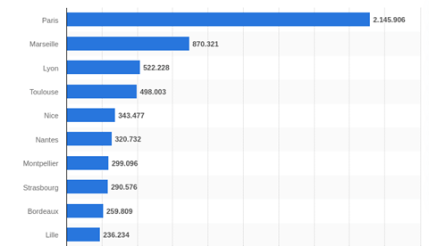
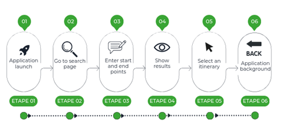
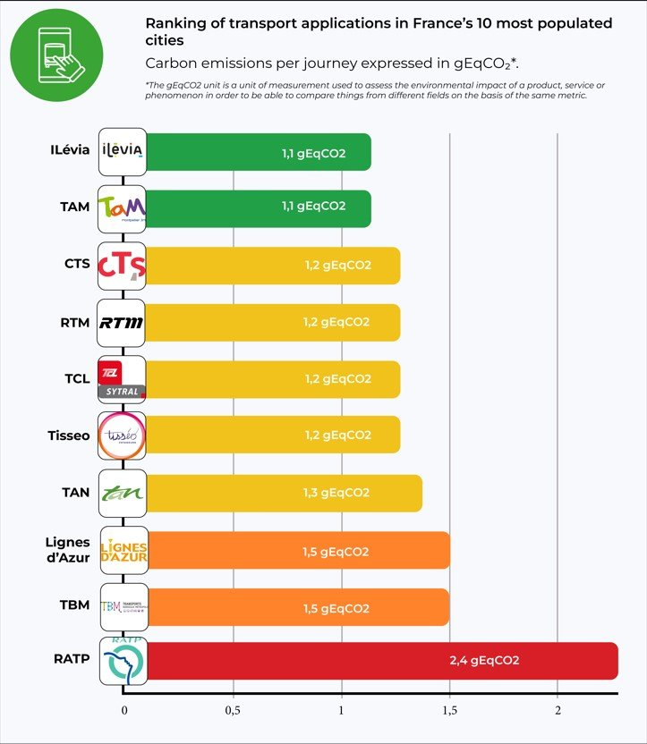
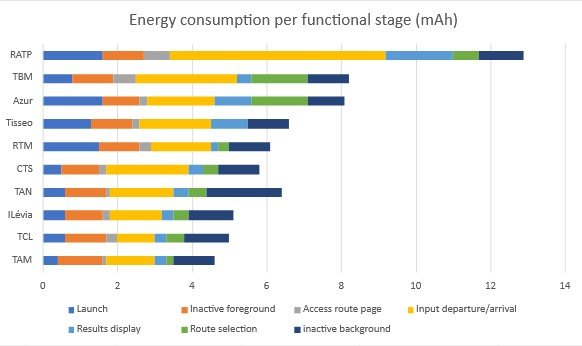
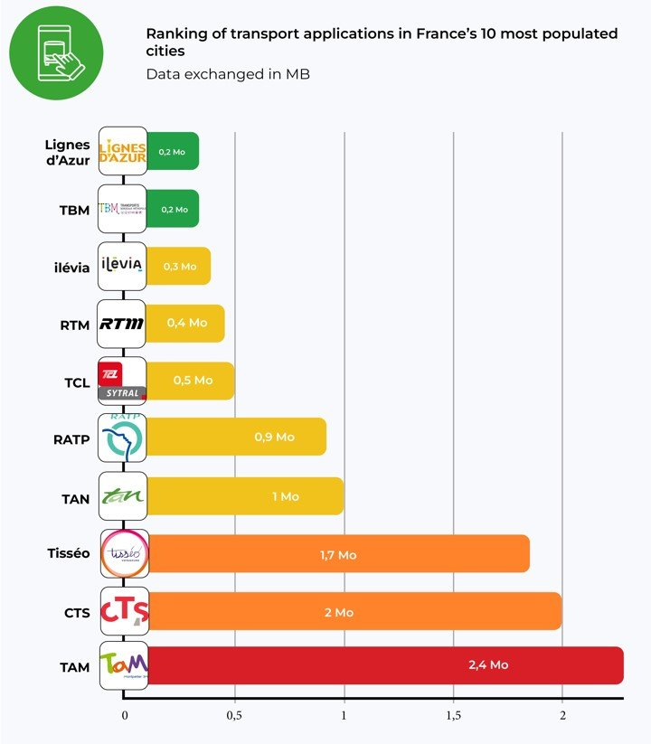
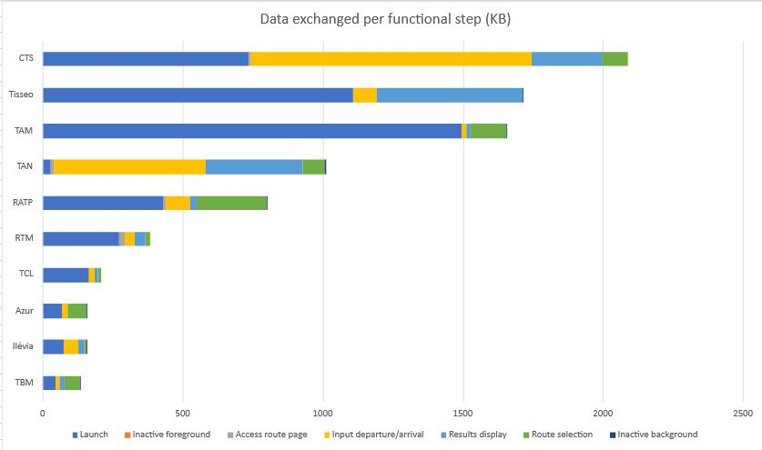

With the emergence of transport apps in France, urban mobility has undergone a significant transformation in recent years. Indeed, these mobile applications are among the most downloaded and used by the French. Every major city has an app published by an urban transport company, offering practical, flexible solutions for getting around town. However, behind this ease of use and convenience lies an aspect that is often overlooked: the environmental impact of these applications.
These companies have understood that the development of mobile applications makes it possible to offer services to passengers (timetables, traffic information, transport maps, intermodality), but also to reduce costs by providing ticket sales and stamping services directly integrated into the application on our phones.
The aim of this study is to measure the environmental impact of transport applications in France’s 10 most populous cities, according to the Statista website:
- Bonjour RATP for the Paris region
- RTM in Marseille
- TCL in Lyon
- Tisséo for Toulouse
- Lignes d’azur in Nice
- TAN in Nantes
- TAM in Montpellier
- CTS in Strasbourg
- TBM in Bordeaux
- Ilevia in Lille
These applications differ in terms of user interface, but they all meet a set of essential user needs. We have therefore determined a common user path, enabling us to compare these applications in terms of carbon impact, energy consumption and data exchanged. Finally, in the second part, we analyze the causes of these results.

Methodology
User path definition
For the measurement, we determined a common scenario compatible for all applications, namely the search for a route from point A to point B (geolocation activated), with the following steps.
- Step 1: Launch the application
- Step 2: Access to search page
- Step 3: Enter route
- Step 4: Display results
- Step 5: Route selection
- Step 6: Application background (30 sec)

For this study, data was measured on June 19, 2023, using Greenspector Studio. We used GDSL (Greenspector Domain-Specific Language) to write test scripts, which automatically reproduce the actions to be performed on a phone. The Testrunner module then enabled us to carry out the measurements on an Android smartphone: we thus obtained energy and resource consumption (memory, CPU, exchanged data) and response times for each step of the journey. Finally, based on these measurements, the impact model integrated into Greenspector Studio evaluates the corresponding environmental impact.
Hypothesis
For this evaluation, we decided to study the behavior of a user who regularly uses the application and therefore searches for his itinerary with as few clicks as possible.
Measurement context
- Samsung Galaxy S10, Android 10
- Network: Wi-Fi
- Brightness: 50%.
- Tests carried out over at least 3 iterations to ensure reliability of results
Environmental projection hypothesis
- User location: 100% in France
- Server location: 100% in France
- Devices used: smartphones only
The environmental footprint depends on the location of the application servers, their type, the location of the users and the type of devices they use. We have studied the use of applications only on smartphones and on users present on French soil, as their use is intended only for this part of the population. In the absence of better information, servers were considered to have a medium level of complexity.
Results
After a detailed analysis, we drew up a comparative table of the results, highlighting the applications with the lowest GHG emissions and those with the largest environmental footprint.
The following results are expressed in g of CO2 equivalent per trip.

The soberest application
Lille’s Ilévia and Montpellier’s Tam are the applications with the lowest impact according to our results. They consume very little energy. The fact that the route measured contains a small number of images and animations explains this figure in particular.
Least sober application
Bonjour RATP comes last in the ranking, but that’s no great surprise. In fact, the application consumes a lot of energy. This enormous power consumption is due in particular to the integration of third-party geolocation services and the large amount of multimedia content (photos, icons, etc.). What’s more, the application offers a host of features right from the home screen, such as scooter scanning.
The application preloads a wide range of content. Even if the user is offline, they can still access the interactive map to search for a station. This is a negative point for the application, as this pre-loading is not a critical step for the rest of the journey. It is irrelevant for the user to load a map that goes beyond the borders of Paris.
Projection for 10,000 regular users
Most apps have between 100,000 and 500,000 downloads on the Playstore. For each city, let’s take 10,000 regular users who use the app every day to make a round trip: this equates to 600,000 monthly visits.
[table “75” not found /]The table shows the carbon impact of a single visit in g CO2e and presents the projection of twice-daily use for 10,000 users in kg CO2e. Finally, the projection is made over a one-year period using the same unit.
For low-impact applications such as TAM or CTS, such annual use represents 8.03 tonnes of CO2e. This is equivalent to more than 36,903 km driven in a light vehicle, according to Ademe’s Impact CO2 website.
For the RATP, by far the biggest contributor, the impact is more than double, amounting to 17.5 tonnes of CO2e per year. This is equivalent to over 80,000 km in a light vehicle.
According to the Ministry of Ecological Transition’s Bilan annuel des transports en 2019, a car registered in mainland France has driven an average of 12,200 km over the year. The impact of a sober transport app used by 10,000 people 2 times a day represents the annual emissions of more than 2 light vehicles, while the impact of the RATP represents the annual emissions of around 7 vehicles!
One-year impact projection
According to the RATP Group website, the Bonjour RATP application is visited by 2.5 million unique monthly visitors and generates over 20 million monthly visits. If we assume that each visit includes at least one route search, we can obtain the app’s monthly carbon impact.
This represents 48 t CO2e per month, or more than 220,000 km by car.
But what causes these impacts?
In this second part, we analyze where these environmental impact values may come from. Using energy consumption and data exchanged over the network during the user’s journey, applications are again ranked according to their energy consumption.
[table “74” not found /]
The graph above compares the different stages (apart from a few pauses) of each route measured in terms of energy consumed.
We notice that the pauses in the foreground are generally consuming, i.e. the user is present on the application’s home screen but without performing a single action. This can be explained by the fact that the launch is not long enough to generate all the content, so that even when inactive after being launched, it continues to generate content such as the little bus station icons, for example. It’s also possible that the user’s location is constantly being sought, as evidenced by the activity on the background pause stage.
We also note that background applications consume almost the same amount of energy in all measurements.
The most time-consuming step is the entry of the start and end points of the user’s itinerary, due to the search and loading of the itineraries entered for the section. Indeed, on many transport applications, it is necessary to perform several actions, or even load new pages for each entry step, whereas on other applications, entry is directly accessible from the home page. For example, CTS and Ilevia.
A disparity in consumption is also observed at the route selection stage in the applications. Some applications, such as Tisseo, directly propose the only route available in the next few minutes.
Moreover, RATP displays a route page access step that consumes much more power than the others. Some applications that display zero consumption at this stage simply don’t load a new page, as this functionality is present on the home page. The user’s journey is optimized by reducing actions, thus reducing energy consumption. This is the case with Tisséo, which has no results page to display the different routes. Instead, the application directly suggests the shortest route, as seen in the screenshot below.

One notable observation concerns the route entry stage, where Ratp stands out for its higher energy consumption, being 5.8 times more power-hungry than the TCL. This excessive consumption could be attributed to trackers and integrated third-party services.
Finally, on the Azur application from Nice and TBM from Montpelier, the route display stage consumes more energy than the others. This may be due to the map generated for this display being uncompressed or loading beyond what is necessary, i.e. beyond the limits of the city’s transport network.

In terms of data exchanged, the CTS, Tisseo and TAM applications are the least frugal. TAM exchanges 2.4 MB, twice the average for all applications. The best performers in terms of data exchanged are Azur, Ilevia, TCL, RTM and TBM, which consume less than 0.5 MB.
According to Green IT, the average size of an e-mail is 81 Kb. So, on average, a route search is equivalent to the exchange of 12 e-mails.

According to our tool, during the launch stage of most applications, a significant amount of data exchange occurs to ensure a smooth and responsive user experience. However, some applications, such as TAN, have chosen to adopt a progressive data loading approach. This means that only essential information is retrieved initially, while other data is loaded as the application is used.
As mentioned earlier, the RATP application loads a lot of content at launch, as does TAM. This can be seen when the application is launched offline, with the map already loaded with metro and bus stations and stops, for example.

Are all these third-party services necessary?
The integration of third-party services will depend on the specific benefits they bring, their relevance to end-users and the overall impact on application performance and technical complexity. Testing, performance monitoring and user feedback are recommended to assess the effectiveness of third-party services and make informed decisions.
Conclusion
A study of the environmental impact of transport applications in France’s 10 largest cities reveals contrasting results. Some applications, such as RATP, TBM and Azur, have less sober journeys and consume more energy, which can have a negative impact on the environment. On the other hand, applications such as Azur, Ilevia and TAM stand out by consuming less data and energy.
It is essential that designers and product owners of transport applications become aware of the impact their solutions have on the environment, and look for ways to reduce their ecological footprint. Adopting best practices in terms of digital sobriety and carbon emissions reduction can help mitigate the environmental impact of these applications.
Discover our measurement solutionsSources